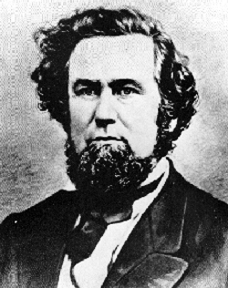
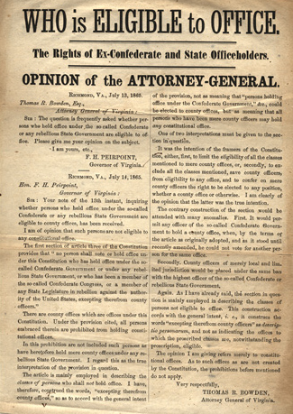

|
Virginia was partially restored as early as 1861 because of the revolt of the
northwestern counties against the secessionists. A "restored government of
Virginia" was established in Wheeling; Francis H. Pierpont became Governor, and
the state's loyal congressional delegation was seated in both Houses.
In May 1862, after a convention had framed a constitution for a separate
|

Francis H. Pierpont
|
state of West Virginia, the Wheeling legislature gave its consent, and Governor
Pierpont transferred his government to Alexandria, where he continued to
administer the Union-occupied portions of the commonwealth. Although the House
of Representatives refused to seat Virginia's loyal claimants, the Pierpont
regime maintained itself. In 1864 a convention disfranchised Confederates and
abolished slavery; it did not, however, confer suffrage upon the freedmen.
At the end of the war, Andrew Johnson recognized the Pierpont government,
which had already ratified the Thirteenth Amendment and in May moved to
Richmond. While the legislature passed laws recognizing the legality of black
marriages, it also eased the disfranchisement clauses of the constitution, and
after an election in October, a conservative victory resulted in the passage of
strict vagrancy laws as well as the practical repeal of Confederate
disabilities. Despite Pierpont's advice to the contrary, the legislators, like
those of other Johnson states, refused its consent to the Fourteenth Amendment,
and accordingly, in 1867 Virginia was remanded to military rule under the
Reconstruction Acts. It became the first military district.
In the meantime, Pierpont's term of office had expired, whereupon, in April
1867 the military commander, General John M. Schofield, removed him and
appointed Henry H. Wells Governor. After an election based on universal manhood
suffrage, a constitutional convention met in December. Dominated by Republicans,
it framed a basic law named after its presiding officer, Judge John C. Underwood
and containing provisions for black suffrage, the establishment of free public
schools for both races, and the liberalization of local government. The new
constitution also included stringent citizens clauses for former Confederates,
provisions so unpopular that General Schofield postponed elections for the
document's ratification.
This delay gave rise to a coalition of moderate Republicans and conservatives
who delegated a Committee of Nine to go to Washington to induce the federal
government to authorize separate votes on the disqualification clauses. The
committee was successful. Congress gave its consent, although it also required
|

This bill was posted on the streets of Richmond
shortly after the Civil War. It hints at the uncertainty of the time,
as the state struggled to understand what Reconstruction would mean.
|
Virginia to ratify the Fifteenth as well as the Fourteenth Amendment before
applying for readmission. Elections were held in July 1869; the constitution was
accepted but the disfranchising clauses rejected. At the same time, the
coalition candidate, Gilbert C. Walker, defeated Governor Wells, and a
conservative legislature was elected. After this body ratified the amendments,
in January 1870 the state was readmitted to the Union.
The triumph of the conservative coalition enabled Virginia to avoid radical
rule. In an administration dominated by conservatives the state's African
Americans continued to hold office and vote, but power rested in the hands of
the white establishment. In compliance with the Underwood constitution, the new
rulers established free schools for both races; like "redeemers" everywhere,
however, they sought to save money, enacted poll taxes and other devices to
reduce black voting, and in general benefited the business interests of the
state.
In 1871 the conservative legislature enacted a funding bill for the payment
of the state's debt. This measure later became a subject of bitter controversy,
with the so-called Readjusters, led by General William Mahone attacking the
concept of diverting funds from social services to pay prewar debts. In 1879 the
Readjusters captured the legislature, ending the rule of the conservative party
and later electing Mahone to the Senate. This victory was made possible because
of the support of African Americans, for whom the Readjusters enacted a number
of vital measures. They repealed the poll tax, established a black normal
school, and abolished the whipping post. But Mahone's collaboration with the
Republicans and his limited favors to the freedmen alienated enough whites to
allow the Democrats in 1883 to recapture the state. The Underwood constitution,
however, remained in force until 1902.
Source: Hans Trefousse, Historical Dictionary of Reconstruction
(Westport, CT: Greenwood Press, 1991), 240-41.
|